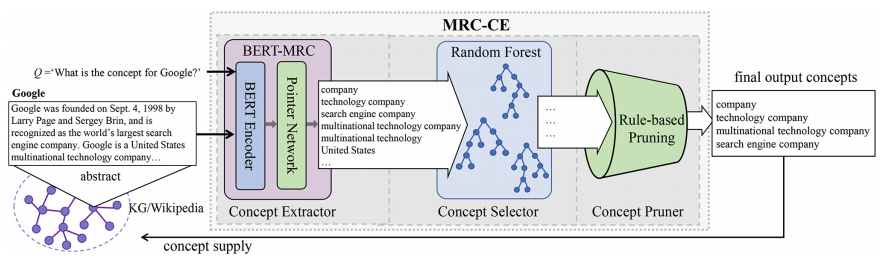

|
Large-Scale Multi-granular Concept Extraction Based on Machine Reading Comprehension
Undergraduate Thesis Project by Siyu Yuan and Deqing Yang. In order to supply existing KGs with more fine-grained and new concepts, we propose a novel concept extraction framework, namely MRC-CE, to extract large-scale multi-granular concepts from the descriptive texts of entities. Specifically, MRC-CE is built with a machine reading comprehension model based on BERT, which can extract more fine-grained concepts with a pointer network. Furthermore, a random forest and rule-based pruning are also adopted to enhance MRC-CE’s precision and recall simultaneously. |
 |